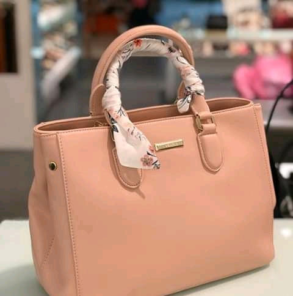
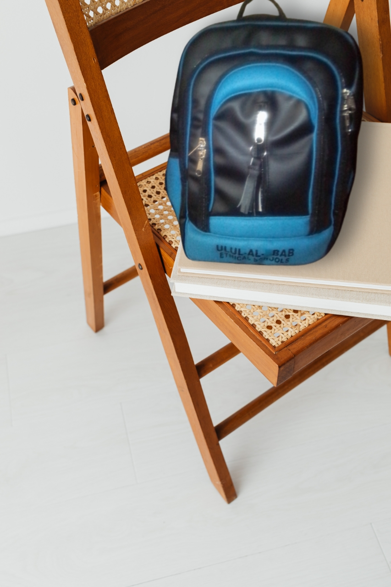

AL-JAMAAL BUSINESS ENTERPRISE
Hello there.... Welcome to my WEBSITE
My name is OYEKANMI KHADIJAT OMOWUMI, a 500level Pure And Applied Mathematics student of LAUTECH.
Anyone conversant with the Institution's history must know its's one of the most notorious when it comes to strikes.
Being a student of knowledge, sitting home and doing nothing is a NO NO which is why i decided to make uptimal use of my time and learn a trade(BAG MAKING) in 2016 when we had one of our first famous strikes.
Gaining a benificial knowledge becomes adictive after a while and sometimes you can't help but want to learn more and more when you have the chance which is why i later learnt another trade(GRAPHIC DESIGN) during the covid-19 lockdown.
There are numerous challenges but then everyone does have one or two at a point or the other in their lives, that's life so overcoming them and coming out victorious is the goal. I have my hands on numerous ventures but these three are my topmost registered deals for now.
The building Blocks Of AL-JAMAAL BUSINESS ENTERPRISE
Al-Jamaal Business Enterprise is presently made up of three major businesses owned by an individual devoted to being an Enterpreneur and giving back to the society.
Some of the my registered busineses include ;
- AL-JAMAAL EXOTIC BAGS
- AL-JAMAAL GRAPHIC DESIGN
- AL-JAMAAL LEARNING INSTITUTE
Now, let me introduce the three businesses to you...
AL-JAMAAL EXOTIC BAGS
I am extremely exited to have you here, We make all sought of classy leather bags which includes but not limited to Side bags, School bags, Lunch bags, Souvenirs, Padded bags, Handbags and many others precisely to make you look EXOTIC and UNIQUE with your choice of bag accesory.Below is our business flier...

My experience as a bag maker
Being a bag maker... I can categorically say is a dream come true. As a kid, building and joining pieces to give a whole beautiful package is a big deal for me. So living in an environment where as a woman you either learn hairdressing, tailoring, computer operating, catering and leather works.
I chose Leather works which as far as I'm concerned is more connected to my passion at the time than any other. I learnt the trade rigorously throughout the strike then more flexibly afterwords and continously learn more everyday.
In 2017, I had a pretty solid foundation on the knows in bag making and as days go by with more efficient practice and dedication, I continue to improve and excel.
These are categories of some leather bags we've made so far;
- SIDE BAGS
- HAND BAGS
- PADDED BAGS
- SCHOOL BAGS
- PURSES
These are usually bags with long straps, sometimes they have short handles and sometimes they have none. Basically, there ever present attribute is their long strap.
The following are some of the side bags we've made;
These are usually bags with durable handles hence their given name, which can be made in various length depending on preference. Sometimes also characterized with straps... all depending on the style and demands of the customer.
Here are some Hand bags we've made so far;


These are usually bags with sturdy and durable forms and shapes hence their given name, they can be made in various shapes and depending on preference. One major characteristics though is their durability which is why they ar usually so expensive.
Here are some padded bags we've made so far;
These are usually bags with 2 individual straps at the back, sometimes with short handles at the top and sometimes side strap though this is per request, size and style.
Some School Bags we've made include;

These are usually small and handy, used for absolutely any occation depending on the style and preverence.
The above are but a few of bags we've made and can make as per request and preverence of our customers
AL-JAMAAL GRAPHIC DESIGN
This is another major businessof ours, here we make all sought of graphics images be it LOGOS, FLIERS, ID CARDS, PDF FILES and many other related aspects of graphic designing.Below is a flier for the business...

My experience as a Graphic Designer
My journey as a Graphic Designer started in 2020 during the covid-19 lockdown saga. Being a professional already in bag making, I can't help but want more useful and beneficial knowledge so when the opportunity in form of lockdown arrises, I grapped it and I continue learning more and growing till date.
These are some of the Fliers and Logos we've made so far;


AL-JAMAAL LEARNING INSTITUTE
This branch is actually a new one for us, The business is mainly a branch from the other two businesses.Here we give more to the society by educating intrested individuals in actualizing their dreams in BAG MAKING and GRAPHIC DESIGN.
My experience as a Mentor/Tutor
Being a Mentor/Tutor is'nt always as easy as some might believe, having people depend on you to deliver meaningful and beneficial knowledge to them can be daunting and stressful at times.But just as students should be dedicated to learning, tutors are also bound to deliver as much and even more than promised which is exactly what strive to do.
We accepts students based on what they want and how they want it but most especially the level of commitment and effort said student puts into learning. Use this link to register for some of our available courses.